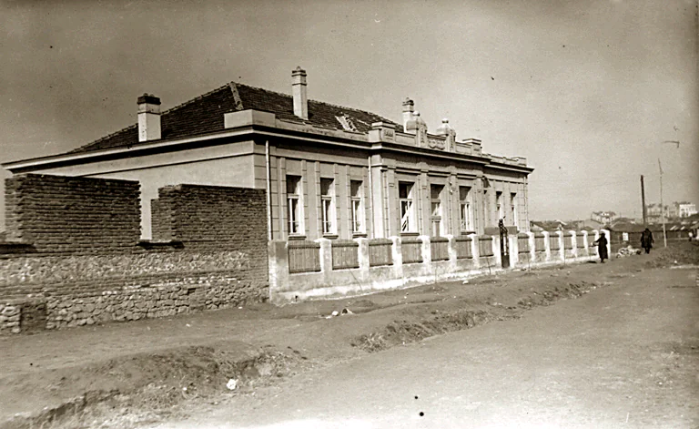
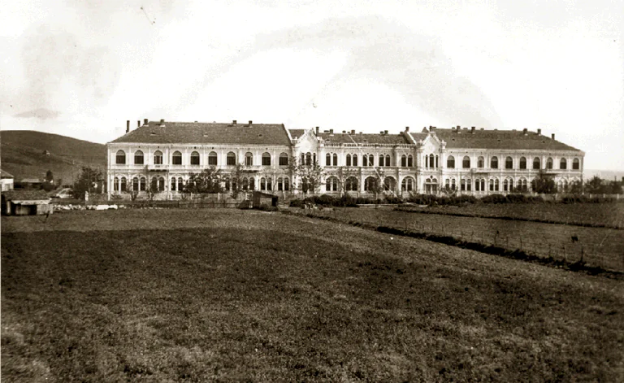
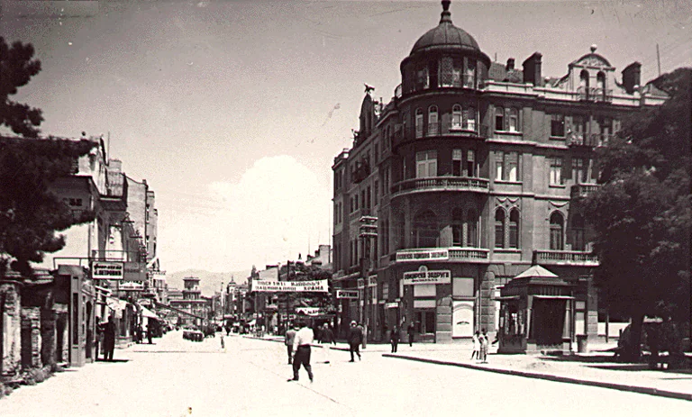
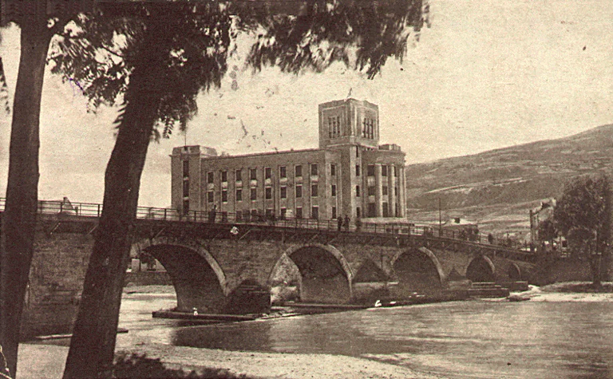
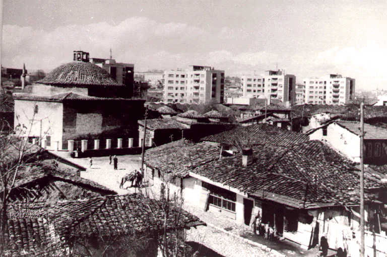

Σκόπια 1916 - 1917 πανόραμα 1
Έγγραφα από τους Βαλκανικούς πολέμους
- Έτος
- 1916-1917
- Διάρκεια
- 00:11

Ξενοδοχείο Τουράτι. Χτίστηκε στα τέλη του 19ου αιώνα.

Η φωτογραφία τραβήχτηκε από το κτίριο του παλιού σιδηροδρομικού σταθμού - σημερινό Μουσείο της πόλης των Σκοπίων -, που χτίστηκε το 1873 την εποχή της Οθωμανικής Αυτοκρατορίας. Στο πρώτο πλάνο η πρόσβαση στον σταθμό, με περιφραγμένους χώρους πρασίνου. Ακολουθεί ο κεντρικός δρόμος που οδηγεί στην πλατεία. Στην αρχή του δρόμου αριστερά το ξενοδοχείο «Ρωσία».

Θέα προς τον κεντρικό δρόμο «Μακεντόνιγια». Η αψίδα στήθηκε προς τιμήν κάποιου σημαντικού επισκέπτη. Αριστερά της το ξενοδοχείο «Ρωσία». - αρχές του 20ού αιώνα.

Το δικαστικό μέγαρο, Δεκαετία του 1920.

Το δικαστικό μέγαρο, Δεκαετία του 1920.

Το κτίριο της Εβραϊκής Κοινότητας - Δεκαετία του 1920.

Ο οίκος των Σέρβων αδελφών - Δεκαετία του 1920.

Σκόπια μετά το 1930. Θέα του κεντρικού δρόμου, από το σημερινό Μουσείο της πόλης των Σκοπίων προς την πλατεία. Τα δύο ψηλότερα κτίρια είναι: το Γκραντ Οτέλ «Μπρίστολ», και δεξιά του το ξενοδοχείο «Σρπσκι Κραλ». Η αρχιτεκτονική των κτιρίων έχει εκλεκτικιστικά στοιχεία.

Τα ξενοδοχεία Σρπσκι Κραλ και Μπρίστολ. - Δεκαετία του 1920.

Το σπίτι των αδελφών Τσιτκούσεφ. - Δεκαετία του 1920

Το σπίτι του φαρμακοποιού Ρίστιτς, γνωστό ως μέγαρο Ρίστιτς. Αριστερά στη φωτογραφία φαίνεται τμήμα του ξενοδοχείου «Λευκός Αετός». (Δεκαετία του 1920)

Μέγαρο Ρίστιτς - περίπου 1925.

Το μέγαρο Ρίστιτς. Αριστερά στη φωτογραφία φαίνεται τμήμα του ξενοδοχείου «Λευκός Αετός». (περίπου 1925)

Ξενοδοχείο «Παρίσι». Φωτογραφημένη η αυλή του ξενοδοχείου, όπου υπήρχαν μπιραρία και ζαχαροπλαστείο. - Δεκαετία του 1920

Ξενοδοχείο «Μόσχα» - Δεκαετία του 1930

Η Οθωμανική Τράπεζα - περίπου 1910.

Η μικρή πλατεία, ακριβώς δίπλα στην Πέτρινη γέφυρα, στην αριστερή όχθη του Βαρδάρη. Στο πρώτο πλάνο το μνημείο των πεσόντων στους Βαλκανικούς πολέμους, και δεξιά πίσω η Οθωμανική Τράπεζα.
- Δεκαετία του 1920

Το νέο ξενοδοχείο «Σεράγεβο» υπό κατασκευή - στην πλατεία. Αριστερά του το καφενείο του θεάτρου, και πάνω από αυτό το παλιό ξενοδοχείο «Σεράγεβο». - Δεκαετία του 1920

Η πλατεία με το ξενοδοχείο «Σεράγεβο» και το δημοφιλές καφενείο «Μάργκερ», αγαπημένο στέκι των κατοίκων των Σκοπίων. Αριστερά από το ξενοδοχείο «Σεράγεβο» ήταν το ξενοδοχείο «Ομπεντίνουβανιε». Στο πρώτο πλάνο, στο πεζοδρόμιο, κάθεται ένας κουλουρτζής. (περίπου 1935)

Ο στρατώνας του φρουρίου των Σκοπίων - Καλέ. - Δεκαετία του 1920

Το κτίριο των φυλακών στα Σκόπια. Βρισκόταν σε άμεση γειτνίαση με το Τζαμί του Μουσταφά Πασά. - τέλη του 19ου αιώνα

Το Χουκουμάτ (δημαρχείο). Δίπλα το τουρκικό ταχυδρομείο, και πίσω του το Τζαμί του Μουσταφά Πασά. - Δεκαετία του 1920

Το Χουκουμάτ (δημαρχείο). Δίπλα το τουρκικό ταχυδρομείο. Στο βάθος φαίνεται το Τζαμί του Μουσταφά Πασά. - Δεκαετία του 1920

Το Χουκουμάτ (δημαρχείο). Δίπλα το τουρκικό ταχυδρομείο, και πίσω του το Τζαμί του Μουσταφά Πασά. - Δεκαετία του 1920

Το κτίριο της οικονομικής επιθεώρησης. Σήμερα στεγάζει το Ινστιτούτο Πολύτιμων Μετάλλων. Την οθωμανική περίοδο ήταν το «Χουκουμάτ» (δημαρχείο). - Δεκαετία του 1930

Το γυμναστήριο ή ο οίκος Σόκολ των Σκοπίων «Σοκολάνα», χτισμένος το 1936.

Ο οίκος Σόκολ των Σκοπίων, χτισμένος το 1936.

Το στρατιωτικό νοσοκομείο «Ερυθρά Ημισέληνος» - τέλη του 19ου αιώνα. Το κτίριο διακρίνεται για τον ακαδημαϊκό αρχιτεκτονικό του ρυθμό με αναγεννησιακές και μπαρόκ μορφές.

Το στρατιωτικό νοσοκομείο «Ερυθρά Ημισέληνος», χτισμένο στα τέλη του 19ου αιώνα. Το κτίριο διακρίνεται για τον ακαδημαϊκό αρχιτεκτονικό του ρυθμό με αναγεννησιακές και μπαρόκ μορφές. (Δεκαετία του 1920)

Το στρατιωτικό νοσοκομείο «Ερυθρά Ημισέληνος», χτισμένο στα τέλη του 19ου αιώνα.

Το στρατιωτικό νοσοκομείο «Ερυθρά Ημισέληνος», χτισμένο στα τέλη του 19ου αιώνα.

Θέα του κεντρικού δρόμου, από το σημερινό Μουσείο της πόλης των Σκοπίων προς την πλατεία. Το μέγαρο Κρανγκ, με κλασικά και μπαρόκ στοιχεία. Εκεί στεγαζόταν ο κινηματογράφος «Καπιτόλ». Στο βάθος της φωτογραφίας φαίνεται η Λέσχη Αξιωματικών. - Δεκαετία του 1930

Σανατόριο «Βαρδάρης» - Δεκαετία του 1930

Το σπίτι του οδοντιάτρου Δρ Ρούμπεν, που είχε ιατρείο ακριβώς δίπλα στην Πέτρινη γέφυρα, στην αριστερή όχθη του Βαρδάρη. - Δεκαετία του 1930

Ταχυδρομικό μέγαρο. - Δεκαετία του 1930

Η Εθνική Τράπεζα, χτισμένη σύμφωνα με τα σχέδια του αρχιτέκτονα Μπ. Νεστόροβιτς. Απλοποιημένος ακαδημαϊσμός στη διαμόρφωση των διακοσμητικών στοιχείων και επιρροές του μοντερνισμού. - Δεκαετία του 1930.

Η Εθνική Τράπεζα τη νύχτα. Μπροστά της, τμήμα του περιπάτου των κατοίκων των Σκοπίων, που λεγόταν «Κόρσο». - Δεκαετία του 1930.

Η Εθνική Τράπεζα, χτισμένη σύμφωνα με τα σχέδια του αρχιτέκτονα Μπ. Νεστόροβιτς. Απλοποιημένος ακαδημαϊσμός στη διαμόρφωση των διακοσμητικών στοιχείων και επιρροές του μοντερνισμού. Δεξιά το Οικονομικό και Εμπορικό Επιμελητήριο (αρχιτέκτονας Μ. Ζλόκοβιτς) - Δεκαετία του 1930.

Η Πέτρινη γέφυρα με την Εθνική Τράπεζα στο βάθος. - Δεκαετία του 1930

Η Εθνική Τράπεζα, η Λέσχη Αξιωματικών και τμήμα της Πέτρινης γέφυρας. - Δεκαετία του 1930

Η Εθνική Τράπεζα με τη Λέσχη Αξιωματικών και την Πέτρινη γέφυρα. Η φωτογραφία τραβήχτηκε από την αριστερή όχθη του Βαρδάρη, από τη μικρή πλατεία, όπου ήταν η πιάτσα των αμαξών. (Δεκαετία του 1930)

Το παλιό Γυμνάσιο Θηλέων. - Δεκαετία του 1930

Ο θερμοηλεκτρικός σταθμός των Σκοπίων - 1910

Το εσωτερικό του θερμοηλεκτρικού σταθμού των Σκοπίων - 1910

Το εργοστάσιο φαρμάκων. - Δεκαετία του 1920.

Το πρώτο πρατήριο καυσίμων «Shell» στα Σκόπια. - 1927

Άσκηση των πυροσβεστών των Σκοπίων. - Δεκαετία του 1930.

Τυπικό ραφείο στην παλιά αγορά - 1920

Στάση αγωγιατών με άμαξες. - Δεκαετία του 1920

Το βυρσοδεψείο των Σκοπίων. - Δεκαετία του 1920.

Το λατομείο των Σκοπίων, στην Κίσελα Βόντα, στις πλαγιές του Βόντνο. - Δεκαετία του 1920.

Το αεροδρόμιο κοντά στα Σκόπια - 1933. Βρισκόταν στη σημερινή θέση των συνοικιών Αεροντρόμ και Γιάνε Σαντάνσκι.

Ο ιππόδρομος των Σκοπίων. (τέλη της δεκαετίας του 1920)

Η κινηματογραφική αίθουσα «Βαρντάρ» - Δεκαετία του 1940. Στον Μεσοπόλεμο στα Σκόπια υπήρχαν οι εξής κινηματογράφοι: Ζρίνσκι, Απόλλων (κάηκε το 1930, και στη θέση του χτίστηκε ο κινηματογράφος Κόρζο), Μπαλκάν, Βαρντάρ, Καπιτόλ, Ουράνια, Άβαλα.

Το μνημείο των μαθητών που έπεσαν στον Α΄ Παγκόσμιο Πόλεμο - Δεκαετία του 1920.

Δημοτικό φαρμακείο. - 1932.

Το Ίδρυμα Ασφάλισης Εργατών (το σημερινό δημοτικό νοσοκομείο). - Δεκαετία του 1930

Το Κοινοβούλιο της Δ. Μακεδονίας, Δεκαετία του 1940. Εκείνα τα χρόνια στεγαζόταν εκεί η Περιφερειακή Διεύθυνση.

Το σημερινό Κοινοβούλιο της Δ. Μακεδονίας - τα χρόνια πριν από τον σεισμό.

Στάρα - Νόβα Μπάνια. Τμήμα των Σκοπίων στη θέση του σημερινού πανεπιστημίου «Άγιοι Κύριλλος και Μεθόδιος»

Το κτίριο της Διεύθυνσης Εσωτερικών Υποθέσεων, χτισμένο τη δεκαετία του 1950. Αργότερα στέγασε τη Νομική, την Οικονομική και τη Φιλοσοφική Σχολή καθώς και την πρυτανεία.

Το Δικαστικό Μέγαρο, αμέσως μετά τον σεισμό. Αριστερά του το παλιό τζαμί «Ελέν Καπάν».

Το κτίριο της Ηλεκτρικής Εταιρείας (1962-1964), σε άμεση γειτνίαση με την πλατεία της πόλης.

Το Δημοτικό Εμπορικό Κέντρο. Η κατασκευή ξεκίνησε επίσημα στις 11 Οκτωβρίου 1969, και στις 27 Απριλίου 1973 τέθηκε σε λειτουργία το κεντρικό τμήμα, από τότε το συγκρότημα λειτουργεί κανονικά.

Το δημοτικό εμπορικό κέντρο (1969 - 1973) με τμήμα του πάρκου «Γυναίκα αγωνίστρια».

Το δημοτικό εμπορικό κέντρο (1969 - 1973) με τον διαμορφωμένο χώρο πρασίνου του πάρκου «Γυναίκα αγωνίστρια».

Έγγραφα από τους Βαλκανικούς πολέμους
Κινηματογραφική επισκόπηση αρ. 21
 Υδραγωγείο4 καρτ-ποστάλ
Υδραγωγείο4 καρτ-ποστάλ Καλέ30 καρτ-ποστάλ
Καλέ30 καρτ-ποστάλ Γέφυρες60 καρτ-ποστάλ
Γέφυρες60 καρτ-ποστάλ Προκυμαία58 καρτ-ποστάλ
Προκυμαία58 καρτ-ποστάλ Πλατεία46 καρτ-ποστάλ
Πλατεία46 καρτ-ποστάλ Κτίρια66 καρτ-ποστάλ
Κτίρια66 καρτ-ποστάλ Χριστιανικοί ναοί19 καρτ-ποστάλ
Χριστιανικοί ναοί19 καρτ-ποστάλ Μουσουλμανικά κτίρια33 καρτ-ποστάλ
Μουσουλμανικά κτίρια33 καρτ-ποστάλ Λέσχη Αξιωματικών29 καρτ-ποστάλ
Λέσχη Αξιωματικών29 καρτ-ποστάλ Θέατρο28 καρτ-ποστάλ
Θέατρο28 καρτ-ποστάλ Σιδηροδρομικός σταθμός13 καρτ-ποστάλ
Σιδηροδρομικός σταθμός13 καρτ-ποστάλ Σχολεία36 καρτ-ποστάλ
Σχολεία36 καρτ-ποστάλ Πάρκα12 καρτ-ποστάλ
Πάρκα12 καρτ-ποστάλ Αγορές18 καρτ-ποστάλ
Αγορές18 καρτ-ποστάλ Δρόμοι38 καρτ-ποστάλ
Δρόμοι38 καρτ-ποστάλ Πανόραμα I60 καρτ-ποστάλ
Πανόραμα I60 καρτ-ποστάλ Πανόραμα II30 καρτ-ποστάλ
Πανόραμα II30 καρτ-ποστάλ Κολάζ55 καρτ-ποστάλ
Κολάζ55 καρτ-ποστάλ Πλημμύρες9 καρτ-ποστάλ
Πλημμύρες9 καρτ-ποστάλ Σεισμός27 καρτ-ποστάλ
Σεισμός27 καρτ-ποστάλ Σκόπια 200026 καρτ-ποστάλ
Σκόπια 200026 καρτ-ποστάλ